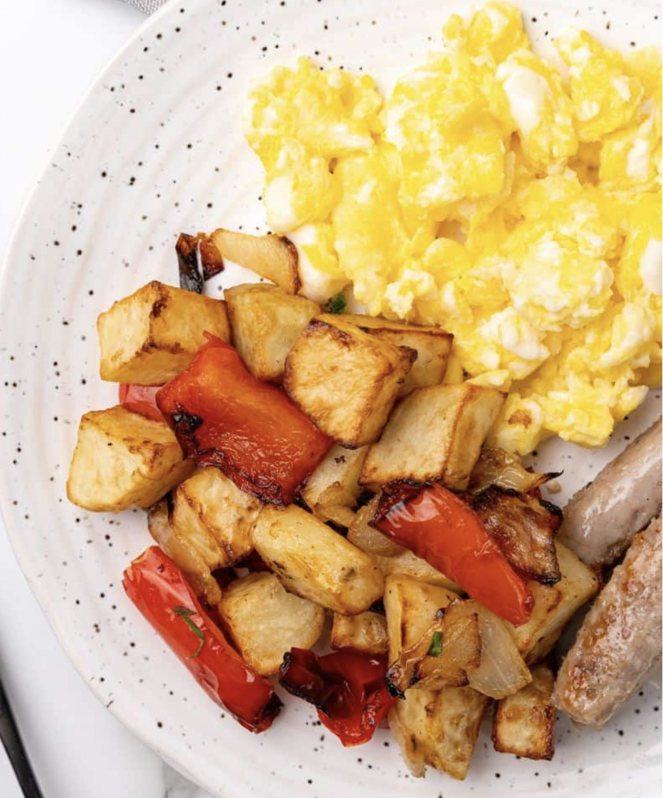
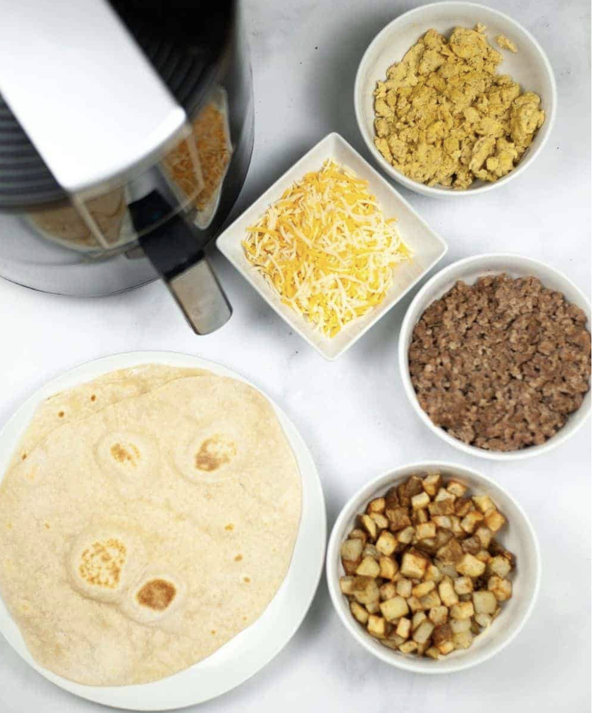
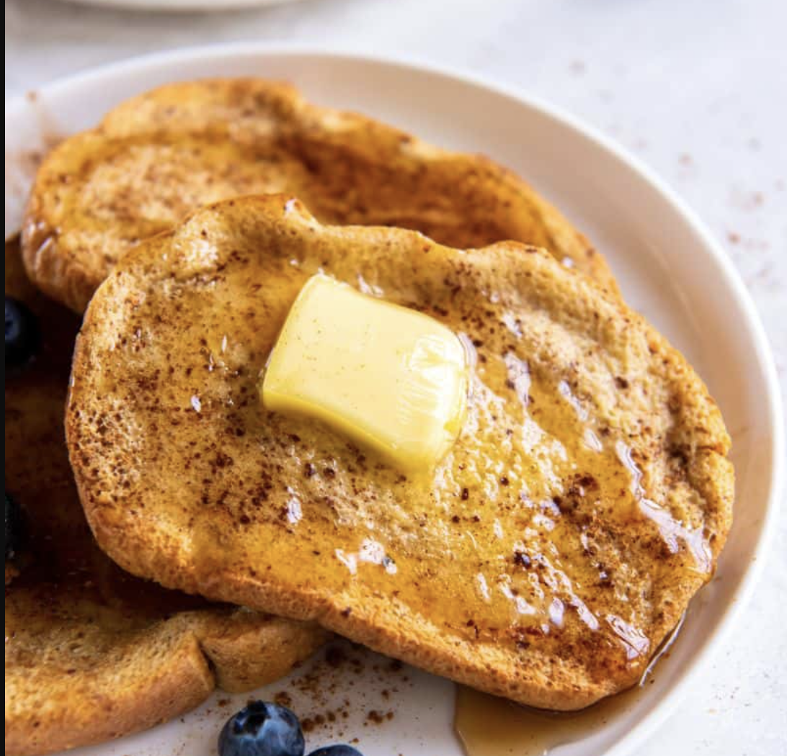

Breakfast Recipies Introduction
This page is dedicated to quick and delicious breakfast foods crafted with minimal ingredients, ensuring a speedy prep time of less than 10 minutes. Dive into a world of scrumptious morning delights that'll kickstart your day in no time.
Breakfast Potatoes and Eggs

Ingredients
- 3-4 potatoes, peeled and cut into half inch cubes
- 2 tablespoons oil
- 1 small onion, roughly chopped
- 1 red pepper, chopped into 1” pieces
- .5 teaspoon salt
- .5 teaspoon garlic
- Fresh parsley for garnish
- 4 eggs
- Butter
- 1/4 cup milk (not necessary but I recommend it)
Potato Instructions
- Chopping:Try to cut the potatoes into the same-sized pieces. This will help them cook more evenly.
- Preparation:Lay the potatoes, onions, and peppers in a single layer in the air fryer basket. Some overlap is okay, but you want the hot air to be able to circulate freely.
- Air Fryer: Place them in the Air Fryer and bake for 15 minutes. Shake the basket halfway through to ensure the potatoes crisp up on all sides.
Eggs Instructions
- Preparation:Place the butter in an air fryer pan and cook at 300 degrees until melted about 2 minutes. This allows the air fryer to preheat without actually waiting for it to preheat. While the butter is melting in the air fryer, whisk together the eggs and milk, then add salt and pepper to taste.
- Air Fryer: Add the egg mixture to the air fryer pan and cook on 300 degrees. After about 3 minutes, open the air fryer and push the eggs to the inside of the pan and stir them around using a small plastic or silicone spatula. It is important to never use metal utensils on a nonstick surface. This could cause your air fryer pan to scratch or even cause your air fryer to peel.
- One Last Touch:Cook the air fryer scrambled eggs for 2 more minutes, then add the cheddar cheese and stir the eggs again.
Breakfast Burrito

Ingredients
- Potatoes (1-2 for single serving)
- 1 tablespoon olive oil
- 1 teaspoon salt
- 1/2 teaspoon pepper
- 1/2 pound raw breakfast sausage
- 6 flour tortillas
- 4 eggs
- 1/2 teaspoon Garlic
- 1/4 cup milk, preferably whole milk
- 1 cup shredded cheddar cheese
- Not necessary but additional items you could add:
- Air Fryer Bacon (in addition to or in place of the sausage)
- Black beans
- Avocado
- Diced jalapeño or bell peppers
- Cilantro
- Chopped onion
Burrito Instructions
- Getting Started:Chop potato into 1/2-inch cubes. Coat the cubes in oil, salt, and pepper, then place them in the air fryer basket and cook for 8 minutes at 400 degrees. Remove from the air fryer and set aside, changing the air fryer to 380 degrees.
- Sausage:Brown sausage in a skillet on medium heat and break into crumbles. Once cooked, remove from skillet and set aside, keeping the sausage grease in the pan.
- Eggs Preparation: Whisk the eggs and milk together, season with a little salt and pepper, then scramble the eggs in the sausage grease.
- Mix and Combine: Combine eggs, sausage, potatoes, and cheddar cheese in a mixing bowl. Load the mixture into each flour tortilla evely, making sure there’s enough room to close the burrito and then fold into a burrito. You can close with a toothpick if needed as well.
- Final Touches: Place the burrito in the air fryer basket and cook at 380 degrees for 5 minutes. Flip and add an additional 3 minutes.
French Toast

Ingredients
- 4-6 slices sandwich bread
- 2/3 cup milk
- 2 large eggs
- 1/2 tablespoon sugar
- 1/2 teaspoon vanilla extract
- 1/2 teaspoon ground cinnamon
- pinch of salt
French Toast Instructions
- Getting Started:Preheat the air fryer to 350 degrees for 5 minutes.
- Combine IngredientsIn a medium-sized shallow bowl, whisk together the milk, eggs, sugar, vanilla, cinnamon, and salt until well combined.
- Prep the Bread Dip each piece of bread into the mixture, soaking both sides in the liquid for 15 seconds per side, allowing the excess to drip off.
- Mix and Combine: Spray the inner basket with cooking oil spray, then place the pieces of bread in a single layer inside, working in batches as needed. Air Fry for 6 minutes, flipping them halfway through the cook time.
- Final Touches: Serve with butter and maple syrup or honey, or sprinkle the pieces with granulated sugar and garnish with fresh berries.